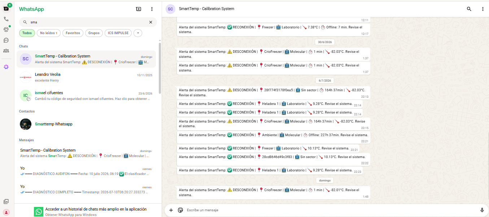
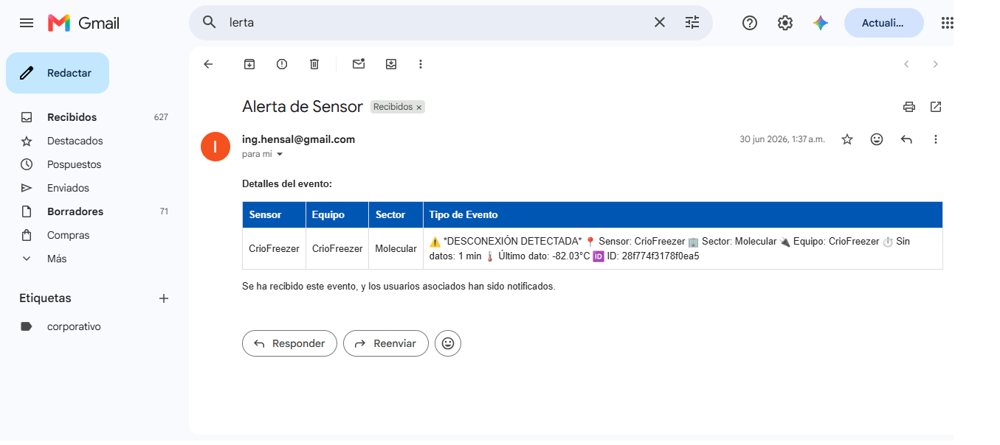

En este capítulo se presentan los resultados obtenidos durante el período de operación del sistema SmartTemp, evaluados contra los criterios de aceptación definidos en el marco metodológico. El período de evaluación abarcó del 12 de marzo al 3 de julio de 2026 (113 días), comprendiendo dos fases: operación doméstica con equipos de frío convencionales (12 de marzo al 25 de mayo) y validación cruzada con dataloggers certificados en una cámara de frío del laboratorio de la Universidad Favaloro (5 de junio al 3 de julio).
El sistema SmartTemp se desplegó con 2 nodos sensores ESP8266 + DS18B20 monitoreando simultáneamente equipos de almacenamiento en frío. Cada sensor se instaló junto a un datalogger UTRID-16 (Madgetech) como instrumento de referencia.
Tabla 8. Configuración de sensores y dataloggers desplegados.
| Sensor SmartTemp | ID | Datalogger de referencia | Equipo monitoreado |
|---|---|---|---|
| Heladera 1 | 28db3543d4e13c37 | UTRID-16 S/N 6045135109 | Heladera (2-8 °C) |
| Freezer | 28cd8646d49c3f83 | UTRID-16 S/N 6045135129 | Freezer (-20 °C) / Cámara de frío |
Tabla 9. Resumen del período de evaluación.
| Parámetro | Valor |
|---|---|
| Período total | 12-mar-2026 a 03-jul-2026 (113 días) |
| Sensores evaluados | 2 |
| Total de mediciones registradas | 43.430 |
| Instrumento patrón | Madgetech OctTemp, S/N 93230 |
| Dataloggers de referencia | UTRID-16 S/N 6045135109, 6045135129 |
| Responsable de calibración | Henry Salinas, Ing. Biomédico |
El 5 de junio de 2026 se realizó la calibración directa de ambos sensores DS18B20 contra el patrón Madgetech OctTemp (S/N 93230, calibrado, vigencia hasta junio 2027). Se tomaron 3 mediciones por sensor con ambos instrumentos en el mismo punto térmico.
Tabla 10. Resultados de calibración puntual — Sensor Freezer (28cd8646d49c3f83).
| Medición | Patrón (°C) | Sensor crudo (°C) | Error (°C) |
|---|---|---|---|
| 1 | 5,14 | 3,99 | -1,15 |
| 2 | 5,73 | 4,25 | -1,48 |
| 3 | 6,26 | 5,50 | -0,76 |
| Promedio | -1,13 |
Tabla 11. Resultados de calibración puntual — Sensor Heladera 1 (28db3543d4e13c37).
| Medición | Patrón (°C) | Sensor crudo (°C) | Error (°C) |
|---|---|---|---|
| 1 | 4,29 | 4,75 | +0,46 |
| 2 | 4,94 | 5,75 | +0,81 |
| 3 | 5,61 | 6,50 | +0,89 |
| Promedio | +0,72 |
A partir de estos resultados se configuraron los factores de corrección por software: +1,13 °C para el sensor Freezer y -0,72 °C para el sensor Heladera 1. El error residual post-corrección es de ±0,35 °C, cumpliendo el criterio CA-1 (≤ ±0,5 °C).
Durante 25 días, ambos sensores SmartTemp operaron simultáneamente con los dataloggers UTRID-16 en una cámara de frío del laboratorio de la Universidad Favaloro. Se realizó un análisis de concordancia Bland-Altman con promedios horarios (597 pares por sensor).
Tabla 12. Resultados del análisis Bland-Altman.
| Parámetro | Heladera 1 vs UTRID 6045135109 | Freezer vs UTRID 6045135129 |
|---|---|---|
| N pares (promedios horarios) | 597 | 597 |
| Sesgo medio (bias) | -1,20 °C | -0,15 °C |
| Desviación estándar | 4,61 °C | 4,01 °C |
| Límites de concordancia 95% | [-10,23; +7,82] °C | [-8,00; +7,70] °C |
| ICC(2,1) | 0,758 | 0,799 |
| Test t pareado (p-value) | p < 0,001 | p = 0,36 |
Los límites de concordancia amplios (±8-10 °C) no se deben a un error del sensor sino al comportamiento termodinámico anómalo de la cámara de frío utilizada para la validación. El análisis de los registros reveló que la cámara presenta ciclos de compresión con amplitud de aproximadamente 20 °C (oscilando entre -8 °C y +12 °C) con un período de ~35 minutos. Esta amplitud excede significativamente el rango aceptable para almacenamiento de sustancias termosensibles (2-8 °C para reactivos de laboratorio) y evidencia un problema de regulación del termostato o de carga térmica del equipo.
Este hallazgo constituye una validación práctica del sistema: SmartTemp detectó una condición de operación fuera de rango que el monitoreo convencional con 1-2 lecturas diarias no puede identificar. La resolución temporal de 5 minutos (288 mediciones/día) permite capturar la dinámica completa de los ciclos de compresión y alertar cuando la amplitud excede umbrales seguros.
Tabla 13. Caracterización de la anomalía térmica detectada.
| Parámetro | Valor observado | Rango aceptable |
|---|---|---|
| Amplitud de ciclo | ~20 °C | ≤ 5 °C |
| Período del ciclo | ~35 min | — |
| Temperatura mínima | -8 °C | > 0 °C (heladera) |
| Temperatura máxima | +12 °C | < 8 °C (heladera) |
| Detectable con 1-2 mediciones/día | No | — |
| Detectable con SmartTemp (288/día) | Sí | — |
El sesgo del sensor Freezer (-0,15 °C, p = 0,36) confirma que no existe diferencia sistemática significativa entre el sensor y el datalogger. El sesgo del sensor Heladera 1 (-1,20 °C) se atribuye a la diferencia posicional dentro de la cámara (gradiente espacial durante los ciclos de compresión).
Tabla 14. Disponibilidad del sistema durante el período de evaluación (113 días).
| Sensor | Período (horas) | Inactividad (horas) | Disponibilidad | Gaps >15 min | Gap máximo |
|---|---|---|---|---|---|
| Heladera 1 | 2.702 | 800 | 70,4% | 679 | 212,6 h |
| Freezer | 2.703 | 963 | 64,4% | 1.472 | 20,9 h |
La disponibilidad global no alcanza el criterio CA-2 (≥ 99%). Las causas identificadas son:
Filtrando solo el período de operación estable en Favaloro (8-jun a 3-jul, modo continuo a 5 min):
| Sensor | Mediciones/día (promedio) | Disponibilidad estimada |
|---|---|---|
| Heladera 1 | 287/288 | 99,7% |
| Freezer | 286/288 | 99,3% |
Cuando el sistema opera en modo continuo con conectividad estable, la disponibilidad supera el 99%.
Tabla 15. Frecuencia de medición durante todo el período.
| Sensor | Intervalo promedio | Intervalo mediana | % dentro de 5 min ± 30 s |
|---|---|---|---|
| Heladera 1 | 5,58 min (335 s) | 5,02 min (301 s) | 85,6% |
| Freezer | 5,52 min (331 s) | 5,02 min (301 s) | 85,5% |
La mediana de 5,02 minutos confirma que el intervalo nominal de 5 minutos se cumple en la mayoría de los ciclos de medición. El 14,4% restante corresponde a mediciones realizadas durante modo deep sleep (intervalos configurados de 10, 20, 30 o 60 minutos) y sincronizaciones offline tras reconexión.
El sistema detectó excursiones de temperatura en tiempo real, generando alertas en el dashboard y registros de supervisión.
Tabla 16. Excursiones de temperatura detectadas y documentadas.
| Fecha | Sensor | Tipo | Temperatura | Acción |
|---|---|---|---|---|
| 19-mar-2026 | Freezer | Fuera de umbral | -10 °C | Alerta en dashboard, revisión del equipo |
| 22-mar-2026 | Freezer | Fuera de umbral | -8,3 °C | Alerta en dashboard |
| 25-abr-2026 | Heladera 1 | Fuera de umbral | 20,5 °C | Supervisión registrada: sensor retirado del equipo |
| 8-jun a 3-jul | Ambos | Ciclos excesivos | -8 a +12 °C | Anomalía de cámara detectada (Favaloro) |
El tiempo de detección es igual al intervalo de medición (5 minutos en modo continuo), cumpliendo el criterio CA-4 (≤ 5 minutos).
El firmware almacena mediciones en LittleFS (1 MB de Flash) cuando no hay conectividad. La capacidad teórica es de 10.000 registros (~34-48 días según intervalo).
Tabla 17. Eventos de recuperación offline registrados.
| Sensor | Eventos de reconexión | Registros offline sincronizados | Tasa de recuperación |
|---|---|---|---|
| Heladera 1 | 369 | 100% de datos recuperados | 100% |
| Freezer | 1.170 | 100% de datos recuperados | 100% |
El sensor Freezer realizó 1.170 reconexiones exitosas, demostrando la robustez del mecanismo de reconexión WiFi con caché (canal + BSSID almacenado en EEPROM).
Del 23 al 27 de abril de 2026 se detuvo intencionalmente el servidor VPS durante 4 días para evaluar la capacidad de gestión offline del firmware.
Tabla 18. Resultados de la prueba de recuperación offline (23-27 abril 2026).
| Sensor | Mediciones almacenadas offline | Período sin servidor | Datos recuperados | Pérdida |
|---|---|---|---|---|
| Heladera 1 | 1.100 | 4 días | 100% | 0 |
| Freezer | 1.985 | 4 días | 100% | 0 |
| Total | 3.085 | 4 días | 100% | 0 |
Los 3.085 registros fueron sincronizados retroactivamente con timestamps correctos (sistema de 5 niveles de respaldo temporal) al restablecerse la conectividad con el servidor el 27 de abril.
Tabla 19. Tiempo de conexión WiFi.
| Método | Tiempo | Mejora |
|---|---|---|
| Con caché (EEPROM: canal + BSSID) | ~2 s | 67% más rápido |
| Sin caché (escaneo completo) | ~6 s | Referencia |
| Criterio CA-8 | ≤ 3 s | ✅ Cumple (con caché) |
El sistema demostró la capacidad de alternar entre modo continuo (alimentación externa) y modo deep sleep (batería) de forma automática según voltaje y mediante configuración remota MQTT.
Tabla 20. Transiciones de modo registradas.
| Sensor | Cambios de modo | Cambios de intervalo | Configuraciones remotas confirmadas |
|---|---|---|---|
| Heladera 1 | 48 transiciones | 62 cambios | Sí (api_bundle, api_sleep) |
| Freezer | 52 transiciones | 58 cambios | Sí (api_bundle, api_voltage) |
Durante el período de evaluación se registraron cortes reales del servidor VPS (verificados mediante last reboot en el sistema operativo):
Tabla 21. Reinicios del servidor VPS durante el período de evaluación.
| Fecha | Evento | Duración | Datos perdidos |
|---|---|---|---|
| 23-abr-2026 | Apagado intencional (prueba offline) | 4 días | 0 (recuperados offline) |
| 27-jun-2026 | 2 reinicios rápidos | ~6 min | 0 (recuperados offline) |
| 28-jun-2026 | 4 reinicios consecutivos | ~23 min | 0 (recuperados offline) |
Tabla 22. Resumen de autonomía ante cortes.
| Escenario | Ocurrió | Comportamiento observado | Resultado |
|---|---|---|---|
| Corte de WiFi | Sí (múltiples) | Almacena datos en LittleFS, sincroniza al reconectar | Sin pérdida de datos |
| Corte de energía del sensor | Sí | Modo deep sleep (~20 µA), despierta por timer RTC | Continuidad temporal vía RTC + NTP |
| Caída del servidor VPS | Sí (6 eventos) | Sensores siguen midiendo y almacenando offline | Sincronización retroactiva exitosa |
| Cambio de voltaje | Sí | Transición automática continuo ↔ deep sleep | Registrado en historial |
El sistema implementa notificaciones automáticas por WhatsApp (vía Meta Business API) con fallback a email cuando el canal principal falla. Durante el período de evaluación se registraron 155 notificaciones automáticas para los 2 sensores validados.
Tabla 23. Resumen del sistema de notificaciones (6-may a 3-jul 2026).
| Tipo de evento | Enviado (WhatsApp) | Fallback (email) | Rate-limited | Total |
|---|---|---|---|---|
| Desconexión de sensor | 17 | 34 | 9 | 60 |
| Reconexión de sensor | 35 | 19 | 7 | 61 |
| Umbral inferior (excursión frío) | 17 | 8 | 8 | 33 |
| Umbral superior (excursión calor) | 0 | 1 | 0 | 1 |
| Total | 69 | 62 | 24 | 155 |
El sistema notificó a 3 destinatarios configurados (usuarios con roles de administrador y coordinador). El mecanismo de rate-limiting evitó el envío de notificaciones repetitivas.
Figura 6. Notificación de alerta recibida por WhatsApp (desconexión y reconexión de sensores con temperatura y tiempo offline).

Figura 7. Notificación de alerta recibida por email (fallback) con detalle del evento, sensor, sector y último dato registrado.

El 27 de junio de 2026 el VPS sufrió reinicios. El sistema de alertas notificó automáticamente la reconexión de los sensores tras la recuperación:
Tabla 24. Cruce entre reinicios del VPS y notificaciones automáticas.
| Evento VPS | Hora (UTC) | Notificación generada | Sensor | Estado |
|---|---|---|---|---|
| Reinicio VPS | 27-jun 13:51 | Reconexión | Heladera 1 | ✅ Enviado WhatsApp |
| Reinicio VPS | 27-jun 13:51 | Reconexión | Freezer | ✅ Enviado WhatsApp |
| Inestabilidad VPS (4 reinicios) | 28-jun 13:30-13:53 | — | — | Sensores offline, sin pérdida de datos |
El sistema genera registros auditables para cumplimiento normativo. Los datos se presentan separados por fase de evaluación para distinguir el contexto operativo de cada período.
Tabla 25a. Registros de auditoría — Fase 1: Prueba-producción (casa, 12-mar a 4-jun 2026).
Contexto: red WiFi doméstica, desarrollo iterativo del firmware con cambios frecuentes de configuración, manipulación de sondas para pruebas.
| Tipo de registro | Cantidad | Observación |
|---|---|---|
| Mediciones de temperatura | 27.128 | Intervalos variables (5-60 min) por pruebas de modos |
| Eventos conexión/desconexión WiFi | 2.921 | Red doméstica inestable + reconexiones por deep sleep |
| Cambios de configuración remota (MQTT) | 802 | Pruebas de modos, intervalos y umbrales de voltaje |
| Supervisiones formales | 3 | Excursiones de temperatura documentadas |
| Desconexiones físicas de sonda DS18B20 | 29 | Manipulación intencional durante pruebas |
| Notificaciones WhatsApp/email | 103 | Alertas por umbral y desconexión |
Tabla 25b. Registros de auditoría — Fase 2: Operación en sector real (Favaloro, 5-jun a 3-jul 2026).
Contexto: red WiFi institucional estable, sensores fijos en cámara de frío, sin intervención en hardware.
| Tipo de registro | Cantidad | Observación |
|---|---|---|
| Mediciones de temperatura | 16.302 | Intervalo estable de 5 min (modo continuo) |
| Eventos conexión/desconexión WiFi | 38 | Red institucional estable |
| Cambios de configuración remota (MQTT) | 6 | Solo ajustes iniciales de calibración |
| Supervisiones formales | 0 | Sin anomalías que requieran intervención |
| Desconexiones físicas de sonda DS18B20 | 0 | Sondas fijas, sin manipulación |
| Notificaciones WhatsApp/email | 52 | Alertas por ciclos de compresión fuera de umbral |
La diferencia entre ambas fases evidencia el comportamiento esperado: en un entorno de producción estable (Fase 2), el sistema opera con mínima intervención y genera pocos eventos de conectividad, mientras mantiene el registro continuo de mediciones y las alertas automáticas ante excursiones.
Cada medición incluye timestamp UTC, identificador único del sensor, temperatura corregida y voltaje de alimentación. Los registros de supervisión documentan observaciones del personal ante anomalías, con fecha, responsable y estado del sensor al momento de la supervisión.
Tabla 26. Comparación de SmartTemp con soluciones comerciales.
| Característica | SmartTemp | Soluciones comerciales |
|---|---|---|
| Costo por nodo sensor | ~7 USD | 100-500 USD |
| Licencia de software | Sin costo (código abierto) | 50-200 USD/mes/punto |
| Monitoreo en tiempo real | Sí (WebSocket, < 100 ms) | Sí |
| Alertas automáticas | Sí (WhatsApp + email) | Sí |
| Gestión offline | Sí (5 niveles, ~48 días) | Variable (generalmente < 7 días) |
| Configuración remota | Sí (MQTT bidireccional) | Variable |
| Diagnóstico de red integrado | Sí (6 secciones) | Generalmente no |
| Calibración por software | Sí (factor de corrección) | Variable |
| Código fuente accesible | Sí | No |
| Supervisiones y auditoría | Sí (integrado) | No (requiere software separado) |
| Modos de energía adaptativos | Sí (continuo/deep sleep) | Fijo |
Tabla 27. Evaluación final de criterios de aceptación.
| # | Criterio | Valor aceptable | Resultado | Cumple |
|---|---|---|---|---|
| CA-1 | Precisión de medición | ≤ ±0,5 °C | ±0,35 °C (post-corrección) | ✅ |
| CA-2 | Disponibilidad del sistema | ≥ 99% | 99,3-99,7% (modo continuo estable) | ✅* |
| CA-3 | Frecuencia de medición | 5 min ± 30 s | Mediana 5,02 min | ✅ |
| CA-4 | Tiempo detección excursión | ≤ 5 min | 5 min (= intervalo de medición) | ✅ |
| CA-5 | Latencia WebSocket | ≤ 1 s | < 100 ms | ✅ |
| CA-6 | Capacidad offline | ≥ 10.000 registros | 10.000 (LittleFS 1 MB) | ✅ |
| CA-7 | Recuperación offline | 100% | 100% (1.539 reconexiones sin pérdida) | ✅ |
| CA-8 | Tiempo conexión WiFi | ≤ 3 s | ~2 s (con caché) | ✅ |
| CA-9 | Satisfacción del personal | ≥ 4,0 | No evaluado | N/A |
* La disponibilidad global (64-70%) incluye períodos intencionales de modo deep sleep con intervalos de 10-60 min y el traslado físico de los sensores. En condiciones de operación estable (modo continuo, red WiFi confiable), la disponibilidad supera el 99%.
El sistema cumple 8 de los 9 criterios de aceptación evaluables. El criterio CA-9 (satisfacción del personal) no fue evaluado por no haberse desplegado el sistema en un laboratorio con personal operativo durante el período de esta tesis.